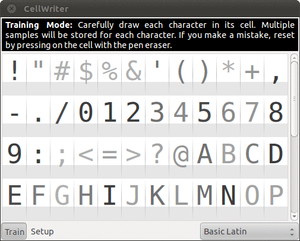
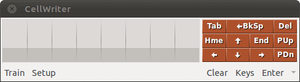
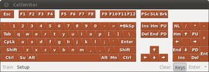

CellWriter
Dieser Artikel wurde für die folgenden Ubuntu-Versionen getestet:
Ubuntu 16.04 Xenial Xerus
Ubuntu 14.04 Trusty Tahr
Zum Verständnis dieses Artikels sind folgende Seiten hilfreich:
 CellWriter
CellWriter  ist ein Programm, welches handschriftliche Eingaben in einem in Zellen aufgeteilten Eingabebereich in Buchstaben und Zeichenketten umwandelt. Beim Schreiben mit einem Grafiktablett oder anderen Eingabegeräten (auch GfxTablet ist nutzbar) wird der geschriebene Text Buchstabe für Buchstabe aufgenommen. Der so eingegebene Text kann dann bestätigt und an das gerade aktive Eingabefeld einer Anwendung gesendet werden, als hätte man den Text mit der Tastatur geschrieben.
ist ein Programm, welches handschriftliche Eingaben in einem in Zellen aufgeteilten Eingabebereich in Buchstaben und Zeichenketten umwandelt. Beim Schreiben mit einem Grafiktablett oder anderen Eingabegeräten (auch GfxTablet ist nutzbar) wird der geschriebene Text Buchstabe für Buchstabe aufgenommen. Der so eingegebene Text kann dann bestätigt und an das gerade aktive Eingabefeld einer Anwendung gesendet werden, als hätte man den Text mit der Tastatur geschrieben.
CellWriter stellt sich auf den Schreiber ein und muss vor der ersten Verwendung trainiert werden. Weitere Trainingsdaten kann das Programm beim Schreiben automatisch erstellen. Die Eingabe beschränkt sich nicht auf lateinische Schriftzeichen, prinzipiell ist es möglich, das Programm auf alle Unicode-Zeichen zu trainieren. Auch Schriftsysteme, welche von rechts nach links schreiben, werden unterstützt.
Für den Fall, dass man einmal eine einzelne Taste benötigt, bietet CellWriter noch eine Bildschirmtastatur an, mit deren Hilfe durch Antippen einer Taste das entsprechende Zeichen ausgegeben werden kann.
Leider stagniert die Entwicklung schon seit längerem, die letzte offizielle Version 1.3.4 datiert aus dem Jahr 2008. Auch ist die Projektseite nicht mehr erreichbar, somit funktioniert leider der Hilfeaufruf aus dem Einstellungsfenster heraus nicht mehr.
Installation und erster Start¶
Die Installation des Programms ist unkompliziert, da es in den offiziellen Paketquellen enthalten ist. Das folgende Paket muss installiert [1] werden:
cellwriter (universe)
 mit apturl
mit apturl
Paketliste zum Kopieren:
sudo apt-get install cellwriter
sudo aptitude install cellwriter
Bis Ubuntu 10.10 kann das Programm unter "Anwendungen -> Barrierefreiheit -> CellWriter" gestartet [2] werden. Ab Ubuntu 11.04 ist vor dem ersten Start Folgendes zu beachten: Seit dieser Version von Ubuntu werden Symbole im Benachrichtigungsfeld standardmäßig versteckt. Da das Systray-Icon im Falle von CellWriter essentiell für dessen Benutzung ist, wird empfohlen, CellWriter in die sogenannte Whitelist der Panel-Applets einzutragen, die all jene Anwendungen enthält, deren Symbole nicht versteckt werden. Analog der Angaben dort muss cellwriter mit in die Liste aufgenommen werden.
Damit die ergänzte Liste übernommen wird, muss man sich neu einloggen. Danach kann CellWriter über die Unity-Dash gestartet werden. Es bleibt nun nach dem Start im Benachrichtigungsfeld aktiv und erscheint auf dem Bildschirm, sobald man auf das Symbol  -klickt.
-klickt.
Training¶

Bevor CellWriter verwendet werden kann, muss es trainiert, also auf die eigene Handschrift eingestellt werden. Im Trainingsmodus werden dem Benutzer alle Zeichen eines Zeichensatzes (etwa des Standard-Zeichensatzes Basic Latin) angezeigt. Es muss nun jedes Zeichen mindestens einmal mit dem Kursor reproduziert werden. Dabei sollte man nicht versuchen, möglichst genau die vorgegebenen Buchstaben zu treffen, vielmehr muss man seine eigene Handschrift verwenden, wie sie dann später von CellWriter erkannt werden soll.
Für eine bessere Erkennungsrate empfiehlt es sich, jedes Zeichen mehrmals einzugeben. Wie viele Samples eines Zeichens CellWriter aktuell zur Verfügung stehen, wird mit der Farbe des Zeichens signalisiert: Je dunkler die Farbe, umso mehr Samples und umso besser die Erkennungsrate des jeweiligen Zeichens.
Für den Anfang sollte es ausreichen, wenn man dem Programm die Zeichen aus den Schriftsätzen Basic Latin und Latin-1 Supplement beibringt. Zeichen, die man selten oder nie benutzt, können einfach weggelassen werden. Später kann man weitere Schriftsätze trainieren oder bestimmte Zeichen, die oft falsch erkannt werden, noch einmal nachüben. Über "Train" kann man jederzeit aus den Schreibmodi wieder in das Training wechseln.
Für den Fall, dass man das Training für ein einzelnes Zeichen von Null an wiederholen möchte (so zum Beispiel, wenn man einen Buchstaben zukünftig in Druck- statt in Schreibschrift eingeben möchte oder umgekehrt), können alle bereits bestehende Samples gelöscht werden. Dafür ruft man im Trainingsmodus mit einem  -Klick unter dem gewünschten Zeichen das Kontextmenü auf und wählt dort den einzigen Menüpunkt "Reset". Alternativ kann man die Samples auch mit einem
-Klick unter dem gewünschten Zeichen das Kontextmenü auf und wählt dort den einzigen Menüpunkt "Reset". Alternativ kann man die Samples auch mit einem  -Klick auf das Feld löschen.
-Klick auf das Feld löschen.
Verwendung¶
Abgesehen vom Trainingsmodus besitzt CellWriter zwei Modi: Zum einen kann man handschriftliche Eingaben in eine Reihe von Zellen vornehmen, zum anderen kann aber auch eine Bildschirmtastatur angezeigt werden, mit deren Hilfe man einzelne Zeichen durch Antippen auswählen kann. Mit dem Button "Keys" kann zwischen den beiden Modi gewechselt werden.
Schreiben in Zellen¶

Das Schreiben in Zellen ist der Standardmodus von CellWriter. Sollte die Tastatur angezeigt werden, kann man mit einem -Klick auf "Keys" wieder in den Zellenmodus wechseln. Die Bedienung ist sehr einfach: Pro Zelle kann, wie schon im Trainingsmodus, ein einzelnes Zeichen hineingeschrieben werden. Sollte das Zeichen falsch erkannt worden sein, kann der Fehler auf zwei Arten korrigiert werden: Durch einen -Klick unter das falsch erkannte Zeichen kann ein Menü mit weiteren Vorschlägen aufgerufen werden. Sollte das gewünschte Zeichen dort nicht auffindbar sein, so kann durch erneute Eingabe des Zeichens in die gleiche Zelle das falsch erkannte Zeichen ersetzt und ein neuer Erkennungsversuch gestartet werden. Im ersten Fall wird die Zeichendatenbank um das fragliche Zeichen erweitert, das Korrigieren trägt also zum Training bei!
Soll ein Zeichen zwischen zwei bereits eingegebene Zeichen eingetragen werden, kann durch einen -Klick auf die Trennlinie (zwei Pfeile werden eingeblendet, wenn die Maus gerade über der Trennlinie steht) eine leere Zelle eingefügt werden. Soll ein oder mehrere Zeichen gelöscht werden, kann das durch einen waagerechten Strich, der die Ränder der Zellen überquert, erreicht werden.
Wird die letzte Zelle einer Zeile gefüllt, erscheint automatisch eine neue leere Zeile. Soll das letzte Feld einer Zeile ein Leerzeichen werden, sodass dieser Mechanismus nicht greifen kann, kann die neue Zeile durch Einfügen einer leeren Zelle am Ende der Zeile erzwungen werden.
Ist der Text fertig geschrieben, kann er mit einem -Klick auf "Enter/Insert" in das Eingabefeld der aktiven Anwendung übertragen werden, in dem sich der Kursor befindet. Durch nochmaliges Drücken des gleichen Buttons wird das Drücken der
⏎ -Taste simuliert. Durch einen Druck auf den Dropdown-Button rechts daneben können früher eingegebene Zeichenketten wieder ins Eingabefeld übertragen werden. Soll hingegen der gesamte bisher eingegebene Text gelöscht werden, kann das mit einem -Klick auf "Clear" erledigt werden.
Virtuelle Tastatur¶

Im Tastaturmodus können Zeichen durch -Klicks auf eine virtuelle Tastatur eingefügt werden. Auch Tasten, die keine Zeichen erzeugen, sind verwendbar. Das Wechseln in den Tastaturmodus erfolgt mit der "Keys"-Taste.
Konfiguration¶
Einstellungen von CellWriter¶
Hier sollen die wichtigsten Einstellungen von CellWriter aufgelistet werden.
Reiter "Interface": Hier können die Abmessungen der Zellen und deren Anzahl, sowie die Größe der virtuellen Tastatur festgelegt werden. Außerdem ist es möglich, das CellWriter-Fenster am oberen oder unteren Bildschirmrand anzudocken - das angedockte Fenster überlagert zwar darunterliegende Fenster, erhält aber keinen Fensterrahmen. Die Option "Enable extended input events" sollte eingeschaltet werden, sofern sie keine Probleme verursacht, sie ermöglicht eine verbesserte Eingabeerkennung. Die Option "Show button labels" sollte hingegen zumindest dann aktiviert bleiben, wenn das Standard-Design "Radiance" von Ubuntu verwendet werden soll - andernfalls werden die Buttons im CellWriter-Hauptfenster unsichtbar.
Reiter "Colors": Hier können die Farben vieler Bedienelemente festgelegt werden. Für eine bessere Integration ins verwendete GTK-Design sollte allerdings die Option "Use default theme colors" aktiviert bleiben.
Reiter "Languages": Hier können zusätzliche Zeichensätze aktiviert werden. Sie stehen dann im Trainingsmodus zur Verfügung uns können dort trainiert werden.
Reiter "Recognition": Hier können erweiterte Handschrifterkennungseinstellungen vorgenommen werden.
Startparameter¶
CellWriter besitzt einige nützliche Startparameter. Diese können beim Starten von CellWriter aus dem Terminal [3] angehängt werden.
| CellWriter-Optionen | |
| Parameter | Beschreibung |
--show-window | Zeigt beim Start das CellWriter-Fenster |
--hide-window | Versteckt beim Start das CellWriter-Fenster |
--window-x=$X | Positioniert das CellWriter-Fenster in der Horizontalen ($X gibt den Abstand vom linken Bildschirmrand an) |
--window-y=$Y | Positioniert das CellWriter-Fenster in der Vertikalen ($Y gibt den Abstand vom oberen Bildschirmrand an) |
--dock-window=$D | Kontrolliert, ob das CellWriter-Fenster angedockt werden soll ($D=0: kein Andocken, $D=1: Andocken am oberen Bildschirmrand, $D=2: Andocken am unteren Bildschirmrand) |
--window-struts | Ist das Andocken aktiviert, dann erlaubt diese Option den Platz für das CellWriter-Fenster zu reservieren, es überlagert damit keine anderen Fenster |
--keyboard-only | Nur der Tastaturmodus steht zur Verfügung (nützlich zum Beispiel beim Anmeldedialog) |
--profile=$PROFIL | Start mit einem alternativen Profil ($PROFIL gibt den vollen Pfad zum gewünschten Profil an) |
--read-only | Das Profil wird bei der Nutzung nicht verändert |
Einbetten in den Anmeldedialog des Bildschirmschoners von GNOME¶
CellWriter kann in die Passwortabfrage des Bildschirmschoners von GNOME eingebettet werden. So ist es möglich, die GNOME-Sitzung ohne Verwendung der Tastatur zu entsperren. Hierzu müssen folgende Einstellungen im gconf-editor vorgenommen werden:
Unter "/apps/gnome-screensaver" muss der Wert des Schlüssels "embedded_keyboard_command" auf "cellwriter --xid --keyboard-only" gesetzt werden. Anschließend muss noch der Schlüssel "embedded_keyboard_enabled" aktiviert werden.
Zu Testzwecken kann der Bildschirm mit der Tastenkombination Strg + Alt + L gesperrt werden, beim Entsperren sollte nun die virtuelle Tastatur von CellWriter zur Verfügung stehen.
Problembehebung¶
Manchmal kann es vorkommen, dass die Eingabe in eine Zelle nach dem ersten Absetzen abbricht. Eine mögliche Lösung für dieses Problem ist das Aktivieren der Option "Enable extended input events" im Reiter "Interface".
Wenn nach dem Aktivieren der Option "Enable extended input events" beim Korrigieren von beschriebenen Zellen und im Trainingsmodus das oben genannte Problem weiterhin besteht, dann sollte CellWriter mit dem folgenden Befehl im Terminal [3] ausgeführt werden:
sh -c "GDK_NATIVE_WINDOWS=true cellwriter"
Wenn CellWriter jetzt problemlos funktioniert, dann kann folgende Zeile in die Datei ~/.bashrc oder ~/.bash_profile eingetragen werden:
alias cellwriter='sh -c "GDK_NATIVE_WINDOWS=true cellwriter"'
Eventuell sollte noch der Befehl im Menüeintrag bzw. im Starter-Icon geändert werden. Wie das zu bewerkstelligen ist, wird im Artikel Menüeditor beschrieben.
Sollte es zu weiteren Problemen kommen, so kann es zur weiteren Diagnostik nützlich sein, CellWriter mit einem höheren Log-Level zu starten:
cellwriter --log-level=7
Dadurch können zusätzliche Informationen aus der Konsolenausgabe zu möglichen Fehlerursachen erhalten werden.
 im franz. Ubuntu-Wiki
im franz. Ubuntu-Wiki- Erstellt mit Inyoka
-
 2004 – 2017 ubuntuusers.de • Einige Rechte vorbehalten
2004 – 2017 ubuntuusers.de • Einige Rechte vorbehalten
Lizenz • Kontakt • Datenschutz • Impressum • Serverstatus -
Serverhousing gespendet von